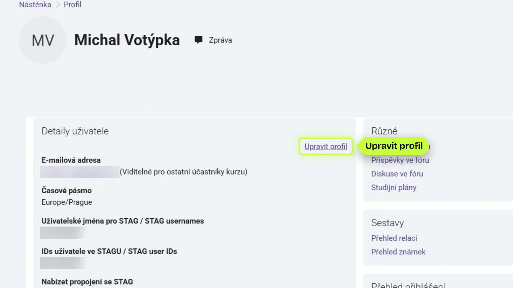
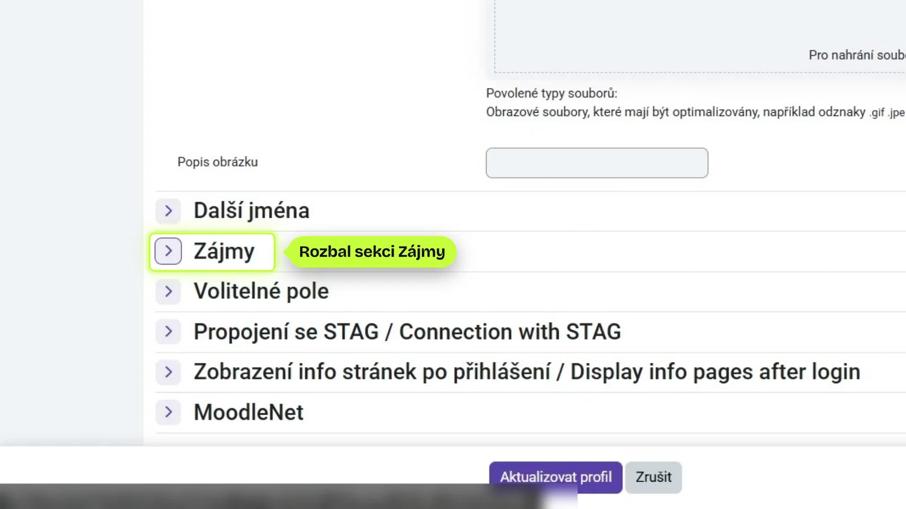
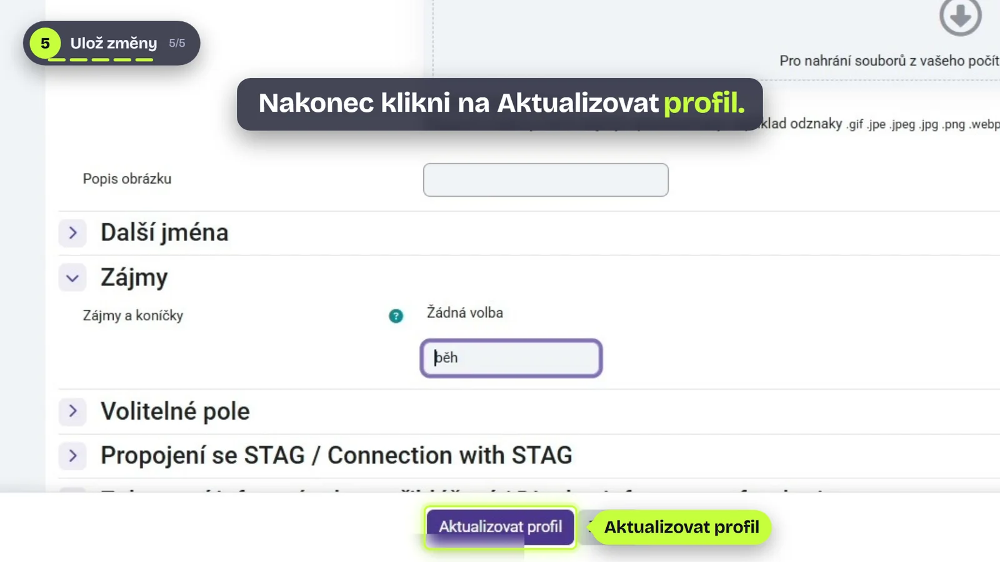
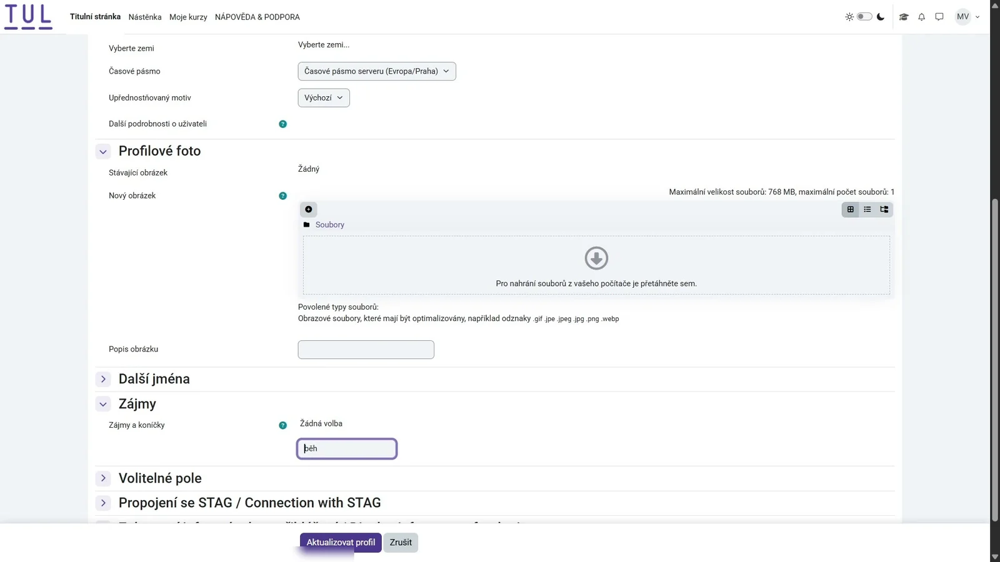

Jak přidat zájem na profil v e-learningu
Jeden návod ve dvou podobách: krátké video s voiceoverem a textový postup se snímky pro ty, kdo radši čtou. Níže je rozepsané, jak video krok za krokem vzniklo.
Zájem na profil za minutu
Stejné kroky jako ve videu. Snímky vznikly ze stejné nahrávky i ze stejné šablony, takže video a text spolu vždy sedí.
-
 1
1Otevři svůj profil
Vpravo nahoře klikni na kroužek se svými iniciálami. Otevře se nabídka. V ní vyber Profil.
-

2Klikni na Upravit profil
Na stránce profilu najdeš v bloku Detaily uživatele odkaz Upravit profil. Klikni na něj.
-

3Rozbal sekci Zájmy
Formulář je dlouhý. Sjeď dolů k sekci Zájmy a kliknutím na šipku ji rozbal.
-
 4
4Napiš svůj zájem
Do pole Vložte štítky… napiš, co tě baví, třeba běh, a potvrď klávesou Enter. Každý zájem je samostatný štítek, takže jich můžeš přidat víc.
-
 5
5Ulož změny
Úplně dole klikni na Aktualizovat profil. Bez uložení se zájem neprojeví.
-
 ✓
✓Hotovo
Zobrazí se hláška Změny uloženy a zájem uvidíš na profilu v bloku Detaily uživatele.
Z 56 s surové nahrávky na hotový návod
Natočil jsem obrazovku jedním průchodem bez střihu. Všechno ostatní dělá skript, který jsem si k tomu postavil s Claude Code. Rozhodnutí o tempu, textu a zvýraznění dělám já.
Natočení
Záznam obrazovky ve Full HD, jeden průchod. Pomalá místa a čekání zrychlí až střih.
OBS StudioAnonymizace
E-mail, studijní čísla, data přihlášení a kurzy jsou rozmazané. Oblasti jsou dané souřadnicemi a časem, takže sedí i při scrollování.
Python · PillowScénář a voiceover
Krátké věty, jedna na krok. Hlas vrací i časování každého slova, a z něj vznikají titulky.
ElevenLabs APIKompozice
Zoomy kamery, zvýraznění, vlnky kliknutí, popisky a odznak kroku. Vše je HTML šablona vykreslená snímek po snímku.
HTML/CSS · PlaywrightZvuk
Efekty na kliknutí a přechody, hudba se pod hlasem automaticky ztiší. Hlasitost je srovnaná na −16 LUFS.
ElevenLabs SFX a hudba · ffmpegExport a text
Video v H.264. Stejný skript vyrenderuje i čisté snímky pro textový návod, bez titulků.
ffmpeg
Před a po
Vlevo surový snímek (už s rozmazanými údaji), vpravo stejný okamžik ve videu. Posuň jezdcem.


NahrávkaVideoSnímek po snímku
Šestnáct okamžiků z hotového videa. Kamera vede oko k místu, kde se klikne, a na konci se vrátí na celou obrazovku.
Časová osa a scénář
Každý krok má svůj úsek. Pokud je věta delší než záběr, skript podrží první snímek, aby hlas nepředběhl obraz.
Jeden krok v kódu
Krok 4 je pár řádků dat: které části nahrávky a jak rychle, kam se přiblížit, co zvýraznit a co říct. Nový návod je nový soubor, ne nový střih od nuly.
{
"step": "Napiš svůj zájem",
# úseky nahrávky: od, do, zrychlení (psaní 1,5×, čekání 2×)
"pieces": [(31.8, 33.1, 1.5), (33.1, 40.0, 1.5), (40.0, 42.4, 2.0)],
"vo": "Do pole napiš, co tě baví. Třeba běh.",
# kamera: čas → střed a přiblížení
"cam": [(0, (420, 800, 1.8)), ("s32.6", (665, 800, 2.6)), ("s41.6", (654, 900, 1.8))],
"rings": [((570, 843, 192, 39), "s32.0", "s40.2")],
"callouts": [("Napiš zájem, třeba běh", (762, 862), "right", "s32.2", "s40.2")],
"sfx": [("pop", "s32.2"), ("typing", "s33.3")],
}Co dělá AI
- čte věty scénáře hlasem a vrací časování slov
- generuje zvukové efekty a podkladovou hudbu
- pomohla mi napsat skript, který vše skládá
Co dělám já
- scénář: co říct, v jakém pořadí a jak stručně
- tempo: co zrychlit, kde zastavit, kam přiblížit
- kontrolu: rozmazání údajů, srozumitelnost, zvuk
Návody se mění. Výroba to má unést.
Aktualizace bez přetáčení všeho
Když se změní prostředí aplikace, přetočím jen dotčený krok a přepíšu jeho časy. Zbytek videa se vyrenderuje znovu sám.
Jazykové verze
Anglická verze znamená přeložit věty a vybrat hlas. Časová osa, zoomy i zvýraznění zůstávají stejné.
Jednotný styl
Barvy, písmo, odznaky kroků a titulky jsou v jedné šabloně. Každé další video vypadá jako ze stejné série.
Video a text vždy sedí
Snímky pro textový návod vznikají ze stejného zdroje jako video. Když opravím krok, opraví se obojí.